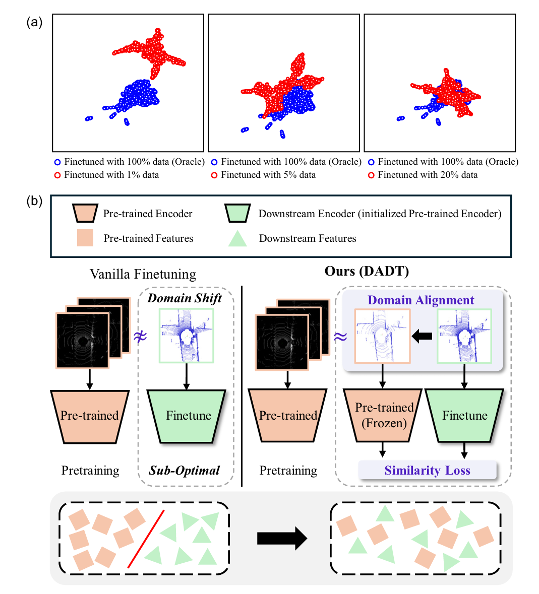

|
Jiyun Jang Hello! I am a Master’s student at Korea University, co-advised by Jungbeom Lee and Jinkyu Kim, and working in collaboration with Sungjoon Choi and Jensen Gao. My research interests include Vision-Language-Action Model, Robotic Reinforcement Learning, Human-Robot Interaction(HRI).
Email / CV / Google Scholar / Github / Linkdin |
{kind=link}
News
|
ResearchMy long-term research goal is to develop general-purpose robotic agents that can live and interact with humans in unstructured real-world environments. To this end, my research focuses on improving the generalizability of Vision-Language-Action (VLA) models, enabling robots to reliably execute diverse tasks under distribution shifts in objects, viewpoints, and environments. In particular, I explore methods for improving action-space grounding and robustness under distribution shifts. Through this line of research, I aim to contribute to scalable learning frameworks for reliable human-compatible robots. |

|
AxisGuide: Grounding Robot Action Coordinate System in RGB Observations for Robust Visuomotor Manipulation
Jiyun Jang, Yujin Sung, Woosung Joung, Daewon Chae , Sangwon Lee, Sohwi Kim, Jinkyu Kim, Jungbeom Lee Robotics: Science and Systems (RSS), 2026 ICRA 2026 - The Workshop on Manipulation Robustness, 2026 paper / project / code (will be available) |
|
 |
Finetuning Pre-trained Model with Limited Data
for LiDAR-based 3D Object Detection by Bridging Domain Gaps
Jiyun Jang, Mincheol Chang, Jongwon Park, Jinkyu Kim International Conference on Intelligent Robots and Systems (IROS), 2024 paper / code |
Extra-curricular activities |
- 2024 Korea University Silicon Valley Program: June 2024- July 2024
- Korea University AI club (AIKU) member: January 2023- December 2023
- Student President of Korea University College of Informatics: November 2021- November 2022
Website template from Jon Barron.